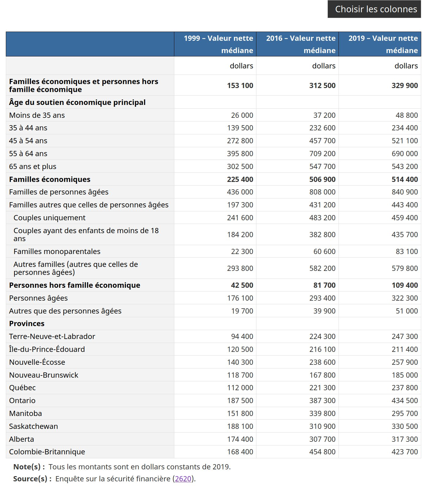
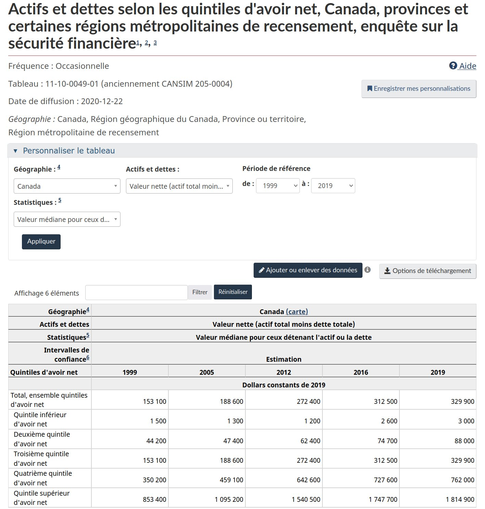

Les données
La meilleure source de données au Canada pour la valeur nettes de gens, c’est l’enquête sur la sécurité financières des ménages de statistique canada. Déjà, le plus gros problème c’est qu’elle vise le ménage, plutôt que l’individu. L’information qu’elle va nous donner va donc être la valeur nette des ménages.
Le premier tableau à voir est donc le Tableau 1 dans le Quotidien du 22 décembre 2020.
https://www150.statcan.gc.ca/n1/daily-quotidien/201222/dq201222b-fra.htm

La richesse médiane des ménages au Canada était de 329 900$ en 2019. Chez les Québécois , elle était de seulement 237 800$.
Quand on regarde par âge, on se rend compte que plus on est vieux, plus on a accumulé d’avoirs en prévision de la retraite. Ainsi, la médiane des 55-64 ans était de 690 000$

Le problème, c’est qu’on veut connaître le 95e percentile, chez les Québécois, pour les 55-64 ans et que le tableau ne permet de ventiler que par une variable à la fois (âge, ou province) en plus de n’avoir que la médiane.
Il existe un autre tableau qui permet d’avoir plus de détails, le tableau 11-10-0049-01.

On y voir encore que la richesse médiane est de 329 900$ au Canada.
Ce qui est intéressant, c’est qu’on apprend la valeur médiane dans chaque quintile d’avoir net.
Ainsi, la médiane du quintile inférieur d’avoir net ( 3000$), correspond au percentile à mi-chemin entre 0 et 20, donc le 10e percentile.
Le tableau ne permet donc de savoir que les avoirs nets des 10e 30e, 50e, 70e et 90e percentiles:
## # A tibble: 5 × 3
## percentile avoir_net class
## <chr> <dbl> <chr>
## 1 10 3000 canada
## 2 30 88000 canada
## 3 50 329900 canada
## 4 70 762000 canada
## 5 90 1814900 canadatrès cool, on avance!
En plus, on peut choisir la géographie de notre choix, soit le Québec.

Ça concorde, la médiane du Québecv est de 237 800, soit ce qu’on avait déjà vu dans le quotidien. Voici les autres chiffres qu’on apprend pour le Québec:
## # A tibble: 5 × 3
## percentile avoir_net class
## <chr> <dbl> <chr>
## 1 10 2600 quebec
## 2 30 62000 quebec
## 3 50 237800 quebec
## 4 70 545000 quebec
## 5 90 1312000 quebec
On a progressé pas mal! On a la richesse du ménage au 90e percentile au Québec.
C’est pas encore ça qu’on veut!
On veut la richesse de l’individu au 95e percentile des 55-64 ans au Québec.
On va devoir continuer à travailler.
Pour ce faire, on va télécharger les donnes du PUMF de l’Enquête sur la Sécurité Financière (prononcé poumf, pour public use microdata file) et on va faire notre tableau nous même!
J’ai donc suivi le lien et cliqué “Télécharger période de référence 2019” pour avoir un fichier zip
Le fichier zip contient les fichiers suivants qui sont intéressants:
SFS2019_EFAM_PUMF.txt est un fichier texte de type “fixed width”. Ça va être chiant à importer
SAS/SFS2019_EFAM_PUMF_i.SAS explique les caractéristique du fichier à importer (largeur et type des colonnes dans le fichier texte)
SFS2019_PUMF_F.pdf contient le dictionnaire des données (c’est quoi la colonne province? c’est PPVRES. C’est quoi le code de la province de Québec? c’est 24.)
Ok, let’s go, j’importe ça dans R.
Ça ressemble à ça une fois importé. On a 10 442 lignes et une centaine de colonnes.
Les variables d’intérêt sont:
PWEIGHT , le poids de l’observation.
PWNETWPG, la valeur nette de l’unité familiale selon la base de long terme.
PWNETWPT, la valeur nette de l’unité familiale selon la base de la terminaison (je ne sais pas quelle est la bonne base à utiliser, mais les chiffres se ressemblent)
PAGEMIEG, la catégorie d’âge
PPVRES, la province de résidence
## # A tibble: 10,422 × 100
## PEFAMID PWEIGHT PAGEMIEG PAS1MRAG PAS1MRG1 PAS1MRG2 PASR1MFA PASR1MR PASRBUYG
## <chr> <dbl> <chr> <dbl> <dbl> <dbl> <dbl> <dbl> <dbl>
## 1 00001 4415. 06 6 6 6 99999996 2 7
## 2 00002 805. 14 6 6 6 99999996 6 96
## 3 00003 1393. 12 6 6 6 99999996 6 4
## 4 00004 217. 11 6 6 6 99999996 6 5
## 5 00005 455. 11 6 6 6 99999996 6 5
## 6 00006 2936. 04 6 6 6 99999996 2 9
## 7 00007 920. 13 6 6 6 99999996 6 6
## 8 00008 1057. 14 6 6 6 99999996 6 5
## 9 00009 940. 07 6 6 6 99999996 6 7
## 10 00010 214. 11 6 6 6 99999996 6 4
## # … with 10,412 more rows, and 91 more variables: PASRCNMG <dbl>,
## # PASRCON <dbl>, PASRCST <dbl>, PASRCURG <dbl>, PASRDPO1 <dbl>,
## # PASRDPO2 <dbl>, PASRDPO3 <dbl>, PASRDPO4 <dbl>, PASRDPO5 <dbl>,
## # PASRDWNG <dbl>, PASRFNMG <dbl>, PASRINT <dbl>, PASRINTG <chr>,
## # PASRMOAG <dbl>, PASRMPFG <dbl>, PASRMRYG <dbl>, PASRRNTG <dbl>,
## # PASRSKP <dbl>, PATTCRC <dbl>, PATTCRLM <dbl>, PATTCRR <dbl>, PATTCRU <dbl>,
## # PATTDIF <dbl>, PATTLCP <dbl>, PATTLCR <dbl>, PATTPAYD <dbl>, …C’est quoi la valeur médiane de la valeur nette au Canada. On va utiliser la fonctioin Hmisc::wtd.quantile(), car on doit utiliser les poids d’échantillonnage.
## 50%
## 338450338 450!! C’est proche du chiffre officiel de 329 900$ qu’on avait dans les tableaux. Ça ne semble pas trop brisé. Qu’en est-il des autres percentiles qu’on connait (10, 30, 50, 70, 90) ?
 ok , on est vraiment proches!!
ok , on est vraiment proches!!
Juste pour être sûrs, est-ce qu’on est capable de reproduire les chiffres par groupe d’âge aussi?

What about les percentiles du Québec?

Ok, ça veut dire qu’on est vraiment capables de reproduire les chiffres officiels à peu de chose près. On n’aurait pas pu espérer mieux sachant qu’on travaille avec un échantillon de ce qui est utilisé pour les chiffres officiels.
Maintenant qu’on a confirmé que l’on sait comment travailler avec le PUMF, nous allons enfin pouvoir créer des données “originales”
here we gooooooooooooo commençons par calculer plus de percntiles au Québec.
 Le 95e percentile de Québécois avait un avoir net de 1 941 500$.
Est-ce que QS a juste pris le chiffre de 2 millions puis l’a divisé par 2 pour avoir un montant par individu en supposant que tous les ménages étaient composés d’un couple?
Le 95e percentile de Québécois avait un avoir net de 1 941 500$.
Est-ce que QS a juste pris le chiffre de 2 millions puis l’a divisé par 2 pour avoir un montant par individu en supposant que tous les ménages étaient composés d’un couple?
Je ne serais pas surpris.
Supposons qu’ils ont fait ça et que la cible du 95% est de 2 millions de dollar d’avoir net par ménage. La question qui demeure est “à quel percentile correspond le nombre de 2 millions de dollar dans chaque groupe d’âge?
| Pourcentage des ménages québécois avec un avoir net de plus de 2 millions | |
| data: PUMF ESF 2019, calculs @coulsim | |
| Pourcentage | |
|---|---|
| 34-moins | 0.0% |
| 35-44 | 2.2% |
| 45-54 | 5.6% |
| 55-64 | 10.2% |
| 65-plus | 4.9% |